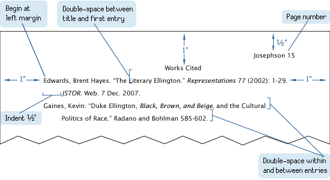

<!DOCTYPE html>
<html>
<head>
  <title>Conclusion/Works Cited</title>
  <link rel="stylesheet" href="styles.css">
</head>
<body>
</body>
</html>
<nav>
     <a href="index.html">The Triple Nacho</a>
    <a href="page2.html">The History Of The Triple Nacho</a>
    <a href="page3.html">Types Of The Triple Nachos</a>
    <a href="page4.html">How Cheese Is Made for The Triple Nacho</a>
    <a href="page5.html">Triple Nacho Security</a>
    <a href="page6.html">Triple Nacho Amir Delivery Service</a>
    <a href="page7.html">Conclusion/Works Cited</a>
</nav>
<<<<<<< HEAD
<h1>Conclusion/Works Cited</h1>
<p>"Best Nacho Recipes." Over the Fire Cooking, 2 Oct. 2024, <a href="https://overthefirecooking.com/best-nacho-recipes/" "unique loaded nacho Accessed 28 Sept. 2026.</p>
<p>"Our Best Nacho Recipes From Famous Chefs." Food & Wine, Dotdash Meredith, 22 Aug. 2026, <a href="https://www.foodandwine.com/nacho-recipes-6402979" "epic nacho Accessed 28 Sept. 2026. </p>
<p>"The Secret to Perfect Nachos is No Oven | Epicurious 101." YouTube, uploaded by Epicurious, 4 Feb. 2026, <a href="https://www.youtube.com/watch?v=Y73TVwFFNsE"  Accessed 28 Sept. 2026.</p>
<p>Szewczyk, Jesse. "I Tested Famous Nachos Recipes To Find The Absolute Best." BuzzFeed, 31 Jan. 2019, <a href="https://www.buzzfeed.com/jesseszewczyk/the-best-nachos-recipe" "unique Accessed 28 Sept. 2026.</p>
  
=======
<h>Pico De Pollo</h>
<p>Pico de pollo is a classic Mexican dish made with chopped tomatos,onions,pepper,cilantro,lime juice,and salt</p>
<p></p>
<p></p>
<p></p>
>>>>>>> 319c61eec012fa44230ea9cc064d3c20ef97193b
